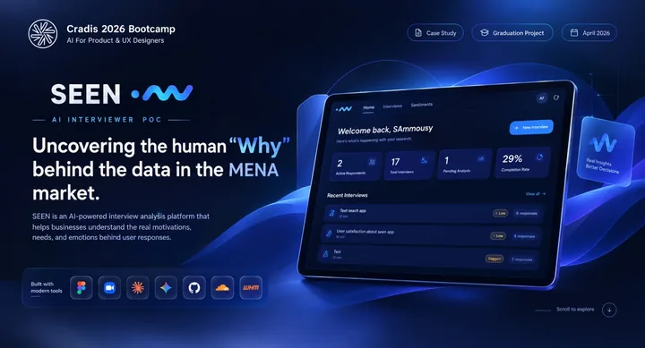
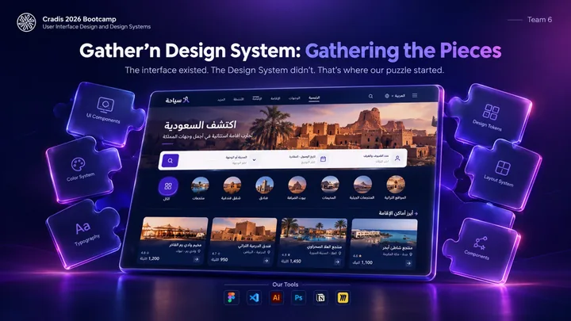
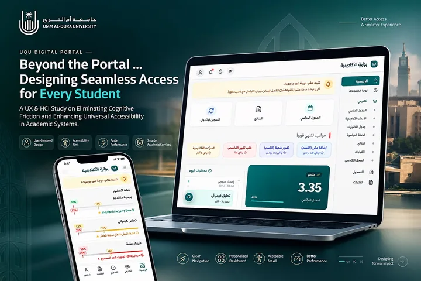
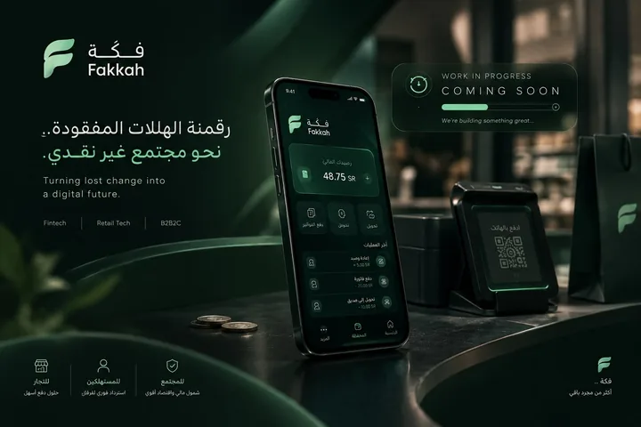

Syarah
Car-buying journey — UX
Building trust in the car-buying journey.
Checkout friction removed through research to lift conversion and retention.
UX / UI
Designer
Car-buying journey — UX
Checkout friction removed through research to lift conversion and retention.

SEENAI UX research agent
AI voice interviews that deliver 20 deep-dive insights overnight.

GathernDesign system — Cradis
Reusable components, design tokens and documentation for a consistent UI.

BawabatiAcademic portal redesign
WCAG 2.1 AAA compliant, with 60% faster information retrieval.

FakkaUX/UI Designer specializing in Human-Computer Interaction (HCI) with hands-on experience in digital product design, user research, and usability testing. Completed a 4-month UX internship at Alinma Bank and advanced UX training through the Trainees x Syarah program at Cradis. Proficient in end-to-end design workflows — discovery, information architecture, wireframing, prototyping, and accessibility compliance (WCAG 2.1 AAA, DGA standards) — with experience in AI-driven UX research tooling and design systems.
Conducted user research and heuristic evaluations for digital banking features, wireframed intuitive interaction flows, and reduced transaction drop-off through iterative usability testing.
Ran stakeholder interviews and user research to align design with business KPIs, applying Affinity Mapping, Customer Journey Mapping, and Card Sorting to optimize conversion paths and information architecture.
From research to a coherent interface. A selection of work in user experience and design systems.
Optimized the digital car-buying journey and checkout flow through data synthesis and user research, eliminating friction to increase conversion and retention.
Designed and built an AI-driven voice interviewing proof of concept that automates qualitative research for the MENA market, delivering 20 deep-dive insights overnight.
A UI design system case study: reusable components, design tokens, and documentation for a consistent product experience.
Re-engineered a responsive frontend for UQU's legacy academic portal to DGA and WCAG 2.1 AAA standards — 60% faster information retrieval and a 100% task success rate.
New case study currently in the works.
Images are the case-study covers; full case studies are on Behance.
Open to freelance work and UX/UI collaborations. Reach out directly or use the form.